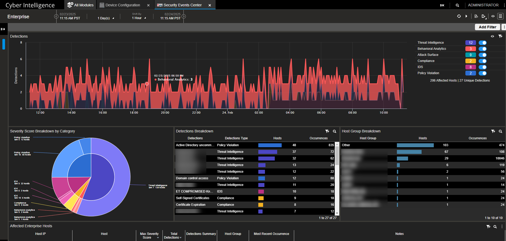
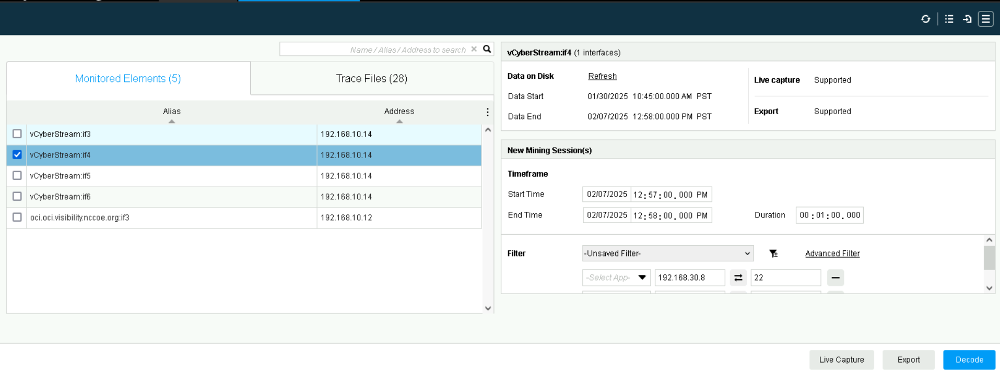
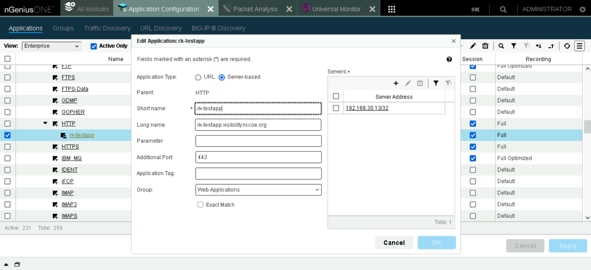
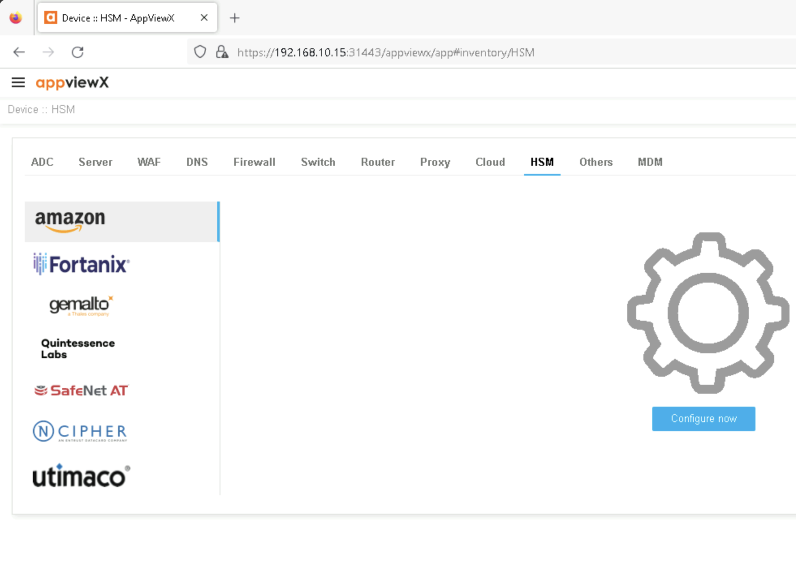
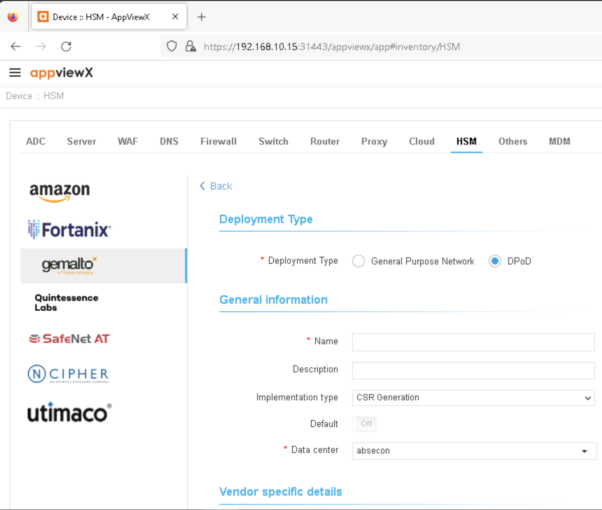

E.1 Shared Components Across All Builds#
NETSCOUT for Visibility Analytics#
This section contains detailed instructions configuring the NetScout products used to perform real-time and post facto traffic analytics. These analytic capabilities are leveraged across all the real-time and post facto decryption previously described approaches.
Instantiation of the NETSCOUT Virtual Appliances#
The NETSCOUT platform consists of four virtual appliances created from the vendor supplied OVF files: a vSTREAM appliance, vCYBERSTREAM appliance, nGeniusONE appliance, and an Omnis Cyber Intelligence (OCI) appliance. The vSTREAM and vCYBERSTREAM appliances are provisioned with three network interfaces, and the nGeniusOne and OCI appliances are each configured with a single network interface.
The vSTREAM appliance improves visibility into virtualized and cloud environments with deep packet inspection to further performance management and security. It is used in this build to provide decrypted and encrypted traffic to the NETSCOUT nGeniusONE appliance.
The vCYBERSTREAM appliance assists in detection, investigation, and response to cyberthreats in real-time by leveraging packet-level data to identify suspicious activity across virtualized and cloud environments.
NetScout vSTREAM Virtual Appliance Network Configuration#
Interface |
Network |
IP Address |
Purpose |
|---|---|---|---|
1 |
MANAGEMENT |
192.168.10.4 |
Connectivity to ISNG appliance. |
2 |
ENCRYPTED |
N/A Layer 2 connection |
Access to the encrypted network data provided by the network tap. |
3 |
DECRYPTED |
N/A Layer 2 connection |
Access to the network where decryptors output the decrypted traffic. |
NetScout vCYBERSTREAM Virtual Appliance Network Configuration#
Interface |
Network |
IP Address |
Purpose |
|---|---|---|---|
1 |
MANAGEMENT |
192.168.10.4 |
Connectivity to ISNG appliance. |
2 |
ENCRYPTED |
N/A Layer 2 connection |
Access to the encrypted network data provided by the network tap. |
3 |
DECRYPTED |
N/A Layer 2 connection |
Access to the network where decryptors output the decrypted traffic. |
NetScout nGeniusOne Virtual Appliance Network Configuration#
Interface |
Network |
IP Address |
Purpose |
|---|---|---|---|
1 |
MANAGEMENT |
192.168.10.4 |
Connectivity to OCI appliance |
NetScout OCI Virtual Appliance Network Configuration#
Interface |
Network |
IP Address |
Purpose |
|---|---|---|---|
1 |
MANAGEMENT |
192.168.10.3 |
Access to the web-based management console and connectivity to other products. |
Real-time Analytics#
The passive real-time decryptors and the break and inspect middleboxes each forward decrypted TLSv1.3 traffic to the real-time analytics platform over an isolated and secured network channel labeled DECRYPTED. The real-time analytics are then performed on these streams of decrypted traffic within a limited time of the decrypted traffic’s receipt. The decrypted traffic is retained by the analytics platform only as necessary and only for a short period of time.
The decrypted traffic can be analyzed from the NetScout OCI user interface, by navigating to the Security Events Center. From here, you can search for events in a given time period - these events will be generated by suricata internally.
{kind=link}

Security Events Center in NetScout OCI#
Post-Facto Analytics#
In each of the lab builds, encrypted traffic is intercepted and forwarded to the post facto analytics platform by a network tap on the SERVER network segment over the ENCRYPTED network segment. The post facto analytics platform is responsible for securely managing the captured traffic, including its eventual destruction. Real world implementations of these architectures would require network taps from all of the various physical and logical networks that make up the data center’s logical data plane. For the middlebox builds, an additional network tap may be placed on the client-facing network segment. Alternatively, the middlebox may copy the incoming and outgoing encrypted traffic directly to the ENCRYPTED network.
The traffic decrypted by NetScout can be viewed by navigating to Packet Analysis on the nGeniusOne appliance.
From here, select an interface, and time period (or Live Capture). Check the box next to SSL Decode to instruct NetScout to decrypt the traffic, and click Decode.
{kind=link}

Packet Analysis in NetScout nGeniusOne#
Configuration Procedure#
The NetScout product was configured to receive traffic from the DECRYPTED and ENCRYPTED interfaces, such that it would perform in both the post-facto and real-time scenarios. Additional configuration to fine-tune the IDS to support the demonstration scenarios detailed in Appendix F, and demonstrate the visibility of the contents of the DECRYPTED traffic stream and the ability to decrypt the ENCRYPTED traffic stream using keys from the Diffie Hellman and Exported Session Keys scenarios.
The figure below shows how to add HTTPS traffic known to be decrypted as an application under HTTP in NetScout’s application configuration. This will instruct NetScout to interpret that traffic as decrypted.
{kind=link}

Application Configuration allowing HTTPS to be viewed as HTTP.#
Additional Configuration Files#
Relevant Configuration Files |
|---|
custom-rules.txtcontains the custom rules added to enable detection of the demonstration scenarios detailed in Appendix F. They are quite specific to these use cases to demonstrate feasibility and it is recommended to instead use open-source or more developed rulesets in practice.suricata.yamlcontains a modified suricata.yaml used in this build. In particular some changes were made to enable the detection of SMTP messages, as well as for capturing files sent over TLS. Note that this file should be carefully reviewed and modified to meet the needs of an organization’s systems, as some of the configurations used in development may add to latency or storage requirements.
Protecting Key Material in AppViewX Using the Thales HSM#
This section contains the configuration instructions for using the Thales TCT Luna HSM to ensure the secure storage of key material within the AppViewX key governance platform.
Instantiation of the Thales TCT Luna HSM#
The Luna HSM from Thales TCT is a physical hardware appliance that was installed in a server rack within the physical lab environment. The physical lab network infrastructure was bridged to the virtual lab network segment and both the physical and virtual networking infrastructure were configured to use the same VLAN tag. The HSM hardware appliance has a single network interface.
Thales TCT Luna HSM Appliance Network Configuration#
Interface |
Network |
IP Address |
Purpose |
|---|---|---|---|
1 |
HSMNET |
N/A |
Provides connectivity to AppViewX. |
SSH into the hardware appliance as the appliance administrator account to access the Luna shell
Elevate the shell session privileges:
hsm login -password <HSM admin password>Create a named “partition” within the HSM to hold the AppViewX data, providing the partition name, a password for accessing the partition, and a “domain”:
par create -par <partition_name> -pas <partition_password> -domain <domain> -f
Configuration Procedure#
This section contains instructions for configuring the AppViewX key governance product to use a master encryption secret derived from the Thales HSM to secure its store of key material. To do this, understand that the AppViewX application appliance consists of a number of services running in a Kubernetes ecosystem running on a Linux host. Some of the instructions are to be performed at the Linux host shell and others are performed through the AppViewX web-based management console.
The Thales TCT Luna Client software must be installed on the AppViewX appliance (not the AppViewX SSM appliance). The client software was installed to the
/home/appviewx/appviewx/hsmdirectory.The AppViewX dependency configuration information was updated to include the HSM by editing the file:
/home/appviewx/appviewx/appviewx_dependencies/properties/hsmto ensure the line:export ChrystokiConfigurationPath=/appviewx/dependencies/hsm/exists and is not commented.
The AppViewX configuration information was updated to include the HSM. This is done by editing the configuration for the avx-common-config Kubernetes pod by issuing the command:
kubectl edit cm avx-common -n abseconIn the resulting editor, add the following line:
export ChrystokiConfigurationPath=/appviewx/dependencies/hsm/and then instruct Kubernetes to restart the avx-common-hsm pod.
With the necessary software dependencies installed and registered, the AppViewX application was configured to use the HSM using the web-based management console.
Navigate to
Inventory > Device > HSM.
AppViewX HSM Inventory#
On the left-hand side of the screen, select the icon for
Gemalto a Thales Company.Next click the plus sign icon in the top right of the screen to create a new HSM device entry.
In the resulting screen, choose deployment type
General Purpose Network.Enter a name for the HSM device.
Choose
BothforImplementation Type.Choose the
Datacenter, defaulting to absecon for the appliance.Choose the
HSM Slotto use.Enter the partition password as configured earlier.
Choose a
Key Handler Nameof appviewx-all.
AppViewX HSM Configuration Parameters#
{kind=link}
{kind=link}
Additional Configuration Files#
No additional files needed for this build.